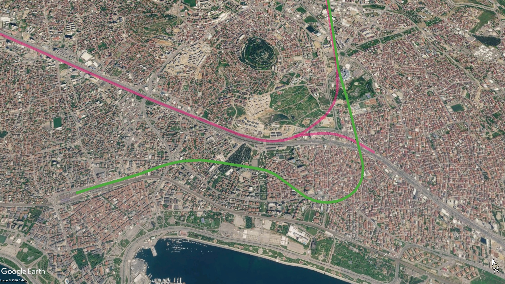

İnşa Halindeki Metro Hatları
İstanbul Anadolu Yakası'nda yapımı devam eden metro hatları.
 M4B Tavşantepe - Kaynarca Merkez Metro Hattı Uzatması
M4B Tavşantepe - Kaynarca Merkez Metro Hattı Uzatması
Uzunluk: 1,1 km
Fiziki İlerleme: %87,5
Yüklenici: Özgün İnşaat
Açılış Hedefi: 2027 İlk Çeyrek
Kadıköy - Sabiha Gökçen Havalimanı Metro Hattının uzatması olarak inşa edilen Tavşantepe - Kaynarca metro hattı ile birlikte M4 hattının iki ayrı kola ayrılması, bir kolun Sabiha Gökçen üzerinden Kurtköy Kavşağına, diğer kolun ise İçmeler/Tuzla Belediyesi yönüne uzatılması planlanmaktadır.

 M10 Pendik Merkez - Sabiha Gökçen Hvl. Metro Hattı
M10 Pendik Merkez - Sabiha Gökçen Hvl. Metro Hattı
Uzunluk: 9,6 km
Fiziki İlerleme: %87,5
Yüklenici: Özgün İnşaat
Açılış Hedefi: 2027 İlk Çeyrek
M10 (Pendik Merkez – Sabiha Gökçen Havalimanı) Metro Hattı, İstanbul'un Anadolu Yakası'nda tamamı Pendik ilçe sınırlarında yer alan, 9,64 kilometre uzunluğunda ve 6 istasyonlu bir metro hattıdır. Sabiha Gökçen Havalimanı ile Fevzi Çakmak arasındaki bölümü Ulaştırma ve Altyapı Bakanlığı tarafından tamamlanarak 2 Ekim 2022'de işletmeye açılan projenin, Pendik Merkez ile Fevzi Çakmak arasındaki etabında İstanbul Büyükşehir Belediyesi tarafından yürütülen inşaat çalışmaları sürmektedir. Finansal nedenlerle Mayıs 2025'te duran ancak Nisan 2026'da çalışmaların yeniden başladığı hat, Kaynarca Merkez'den sonraki istasyonlarda M4 hattı ile aynı tünel ve peron yapısını kullanmaktadır. Pendik sahili ile havalimanı arasındaki sefer süresi 14 dakika olarak planlanmaktadır.

 M12 Ümraniye - Ataşehir - Göztepe Metro Hattı
M12 Ümraniye - Ataşehir - Göztepe Metro Hattı
Uzunluk: 13 km
Fiziki İlerleme: %97
Yüklenici: Gülermak-Nurol-Makyol
Açılış Hedefi: 29 Ekim 2026
M12 (Ümraniye – Ataşehir – Göztepe) Metro Hattı, İstanbul'un Anadolu Yakası'nda kuzey-güney ekseninde hizmet verecek 13 kilometre uzunluğunda ve 11 istasyonlu bir tam otomatik sürücüsüz metro hattıdır. İlk olarak 2017 yılında inşaatına başlanan ancak kısa süre sonra finansman yetersizliği nedeniyle durdurulan proje, 2019 yılında sağlanan dış kredilerle yeniden başlatılarak hızlandırılmıştır. 60. Yıl Parkı ile Kazım Karabekir arasında başta İstanbul Finans Merkezi ve yoğun konut bölgeleri olmak üzere raylı sistem erişimi kısıtlı alanları birbirine bağlayacak olan hat, peron ayırıcı kapı sistemine (PAKS) ve 4 vagonlu trenlerle 19,5 dakikalık sefer süresine sahiptir.

 M13 Yenidoğan - Emek Metro Hattı
M13 Yenidoğan - Emek Metro Hattı
Fiziki İlerleme: %8
Yüklenici: Doğuş İnş.
Açılış Hedefi: 2029
Yenidoğan ve çevresindeki yoğun yerleşim bölgelerini ana raylı sistem hatlarına bağlamak amacıyla projelendirilen M13 metro hattında, durdurulan inşaat çalışmaları finansman çözümleriyle birlikte 10 Mart 2024 tarihinde yeniden başlatılmıştır.

 M14 Altunizade - Bosna Bulvarı Metro Hattı
M14 Altunizade - Bosna Bulvarı Metro Hattı
Uzunluk: 4,5 km
Fiziki İlerleme: %85
Yüklenici: Güryapı–Fernas–Çelikler
Açılış Hedefi: 2027 İlk Çeyrek
M14 (Altunizade – Bosna Bulvarı) Metro Hattı, İstanbul'un Anadolu Yakası'nda Üsküdar bölgesindeki yoğun yerleşimleri ve Çamlıca Tepesi aksını ana ulaşım ağlarına bağlamak amacıyla inşa edilen 4,5 kilometre uzunluğunda ve 4 istasyonlu bir metro hattıdır. Ulaştırma ve Altyapı Bakanlığı tarafından yapımı üstlenilen proje, Altunizade'den başlayarak Ferah Mahallesi ve Çamlıca Camii duraklarından geçip Bosna Bulvarı'nda son bulmaktadır. Yolcu yoğunluğu ve teknik yapısı gereği 2 vagonlu tren setleriyle 8,5 dakikalık sefer süresine sahiptir.